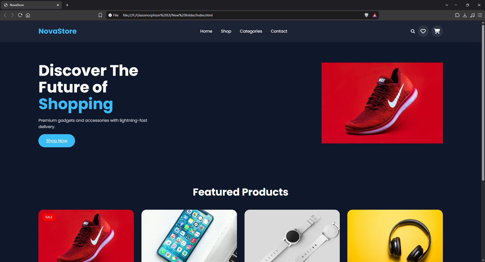
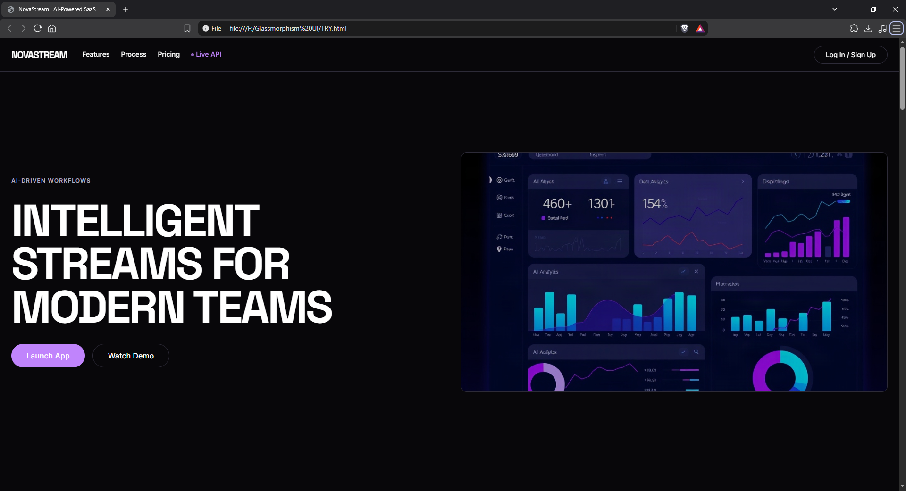

Website Design
Clean, consistent layouts that communicate your brand and make information easy to find.
MY FINISH AND UNFINISH PROJECTS
Hi, I'm Romel Mark Laron — a web designer and developer helping people and businesses turn ideas into clear, useful, and memorable websites.

01 | A LITTLE ABOUT ME
I enjoy creating websites that look good, feel intuitive, and solve real problems.
I'm a web design and development enthusiast who enjoys exploring visual design, building responsive interfaces, and learning new tools. I work to make every project clear, accessible, and tailored to its purpose.
My background: Im a graduated student of Arellano University with a degree of Bachelor of Science in Computer Science, and im a kind of person want to explore more during my whole life or a person want to learn more.
More about working together02 | SERVICES
From first concept to final details, I can help bring your next digital idea to life.
Clean, consistent layouts that communicate your brand and make information easy to find.
Responsive websites built with organized code and attention to the details that matter.
Give an existing site a clearer structure, a more modern look, and a smoother experience.
03 | SELECTED WORK

A responsive storefront concept focused on clean product presentation.

A simple DataStreaming concept for organizing creative work.

A simple gaming hub Website (Not totally finish project).
04 / MY JOURNEY
Arellano University
Our Thesis/Project finished during school called is about Scool subject scheduling to avoid conflict in the time and date of every subjects.
Personal
Building practice projects, exploring UI design, and improving frontend development skills.
Self-directed learning
Exploring more on web design and continues practicing designing webs.
05 / TOOLKIT
A growing set of skills for designing and building useful digital experiences.
06 | HAVE A PROJECT?
Have a website idea, need a refresh, or want to work together? Send me a message and tell me a little about it.
Start a conversation